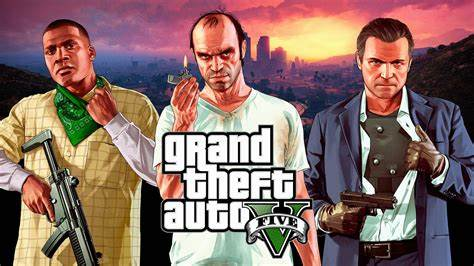

GTA 5 é um dos jogos mais celebrados da franquia, com três protagonistas, mundo aberto e uma narrativa que combina ação, humor e crítica social.
Conteúdo organizado e visual limpo para demonstrar o aprendizado de HTML e CSS do segundo semestre. Navegue entre as páginas para explorar GTA 5 e GTA 6.

GTA 5 é um dos jogos mais celebrados da franquia, com três protagonistas, mundo aberto e uma narrativa que combina ação, humor e crítica social.
A trama de GTA 5 acompanha Michael, Franklin e Trevor em Los Santos, inspirada em Los Angeles. A história se desenvolve em diferentes atos e permite que o jogador alterne entre os personagens conforme cumpre missões e enfrenta conflitos pessoais.
O jogo mostra como cada protagonista lida com suas escolhas: Michael tenta recuperar sua família, Franklin busca ascensão social e Trevor vive em um mundo de violência e caos.
GTA 5 trouxe inovações importantes para a série, incluindo: